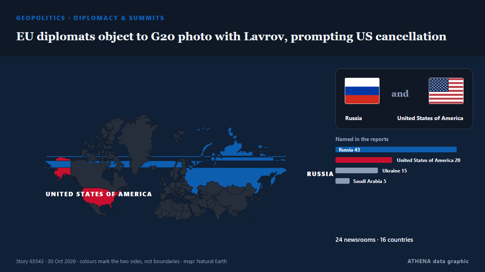

الدبلوماسية والقمم
| 18 أكتوبر | 0 |
|---|---|
| 19 أكتوبر | 0 |
| 20 أكتوبر | 0 |
| 21 أكتوبر | 2 |
| 22 أكتوبر | 1 |
| 23 أكتوبر | 3 |
| 24 أكتوبر | 0 |
| 25 أكتوبر | 1 |
| 26 أكتوبر | 4 |
| 27 أكتوبر | 3 |
| 28 أكتوبر | 3 |
| 29 أكتوبر | 1 |
| 30 أكتوبر | 3 |
| 31 أكتوبر | 0 |
تُعرض العناوين بالإنجليزية كما نُشرت.

EU diplomats object to G20 photo with Lavrov, prompting US cancellation
The meeting in Atlanta will go ahead as planned, ahead of a G20 leaders’ summit hosted by President Donald Trump at his Miami golf club in December. من Euronews English
EU considering Canada as ‘associate member’, Ursula von der Leyen says, despite internal opposition
The European Commission president was speaking at a Canada-EU summit in Montreal. من The Straits Times
N. Korea appears to test propaganda loudspeakers along border
SEOUL, Oct. 29 (Yonhap) -- North Korea appears to have conducted a test broadcas... من Yonhap (English)
Trump says Zelensky and Putin will meet “very soon”
U.S. President Donald Trump stated that a meeting between Ukrainian President Volodymyr Zelensky and Russian leader Vladimir Putin is expected to take place soon. من Ukrinform (English)
EU and Canada to bring ties to 'highest' possible level at summit
The EU and Canada want to bring their relationship to the "highest level possible" as they face a "world of growing rivalries," the 27-nation bloc's chief said Thursday ahead of a meeting with… من The Local Spain
Norwegian prime minister denies Putin lectured him and Finnish president on medieval Slavs during call
The Finnish president says Europe needs new security structures to keep peace in this “a dog-eat-dog world.” من Politico Europe
Russia woos African leaders at Moscow summit
Moscow seeks to strengthen ties with countries it sees as 'natural allies' against the West amid heavy sanctions over its Ukraine offensive. من Free Malaysia Today
Norway trolls Trump with toilet joke after his Nobel Prize meltdown
Norway’s tourist board hit back at the US president’s tantrum over not being awarded the Nobel Prize. من The Independent
Ushakov: Date of trilateral talks depends on Kyiv's actions
Russian President Vladimir Putin told US envoy Steve Witkoff that Moscow was willing to resume stalled, US-mediated peace talks with Ukraine, Kremlin foreign policy aide Yury Ushakov said after the… من RFE/RL (English)
Ethiopia Welcomes UAE Candidate Lana Nusseibeh for UN Secretary-General Post
Emirati diplomat Lana Nusseibeh is being touted as a candidate for the Secretary-General of the United Nations. من Arabian Business
Zacharia blames media for troubled stint as White House press secretary
A White House Press official said Friday that Secretary Katie Zacharia was "let go" from her role after US President Donald Trump signaled she was on her way out, a week after he picked her for the… من France 24 English
Zelensky: No Energy Ceasefire With Russia, but Oleshky Truce Brings Hope
On Wednesday, President Volodymyr Zelensky said the proposed energy ceasefire between Ukraine and Russia never took effect because Moscow continued striking Ukrainian energy infrastructure. من Kyiv Post
Norway and Finland hold rare phone call with Putin: What that means
The two Nordic leaders are attempting to influence US-brokered talks in Abu Dhabi to end the war in Ukraine. من Al Jazeera English
Melania Trump Brokers Russia-Ukraine Ceasefire in Oleshky
Residents of the Russian-occupied Ukrainian town have reported a worsening food crisis since 2022. من Express Tribune
Media groups urge EU Commission transparency as Gaza documents probe unfolds
‘The European Commission’s reputation for safeguarding EU democratic values is in peril,’ open letter to Ursula von der Leyen says. من Anadolu Agency (English)
Attacker killed outside Belgrade’s Israeli embassy
Serbian police say an unidentified assailant attacked a guard with knives outside the Israeli Embassy in Belgrade and was killed just after midnight Wednesday. من ABC News (International)
Rapper Nicki Minaj joins Trump onstage at Michigan rally
The Super Bass singer is the latest big name to campaign in Michigan, where a tight Senate race is playing out ahead of the 3 November midterms. من BBC News
Qatar says Iran needs to show good intentions for mediation efforts to succeed
A delegation from the Gulf Arab country visited Tehran earlier this week to try to de-escalate regional tensions. من The Straits Times
Talks on Ukraine in Abu Dhabi to take place after November 4 — Kremlin aide
The date will be determined soon, Yury Ushakov said. من TASS (English)